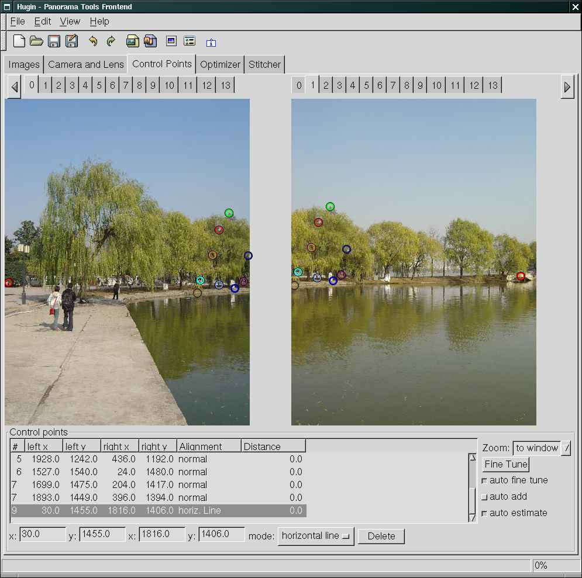

This FAQ is outdated, please use the FAQ at http://wiki.panotools.org/Hugin_FAQ.
hugin Frequently Asked Questions
This document contains answers to questions that have been asked by
users on the Ptx mailing
list and elsewhere.
The answers refer to a fairly recent snapshot of hugin.
This is a FAQ for hugin, and contains mostly hugin specific questions.
General Panorama Tools FAQ's:
-
Panorama Tools FAQ from Helmut Dersch.
Questions
General questions
Control point selection
Common problems encountered while creating a panorama
-
In my panorama, the horizon is curved. How do I straighten it?
-
When optimizing my 360 degree panorama it results in a circle instead of a hfov-360 panorama. How do I make hugin recognize it's a 360 degree panorama?
-
There are dark blends between two images, how do I remove them?
Panorama Postprocessing
Answers
General questions
Can hugin be used on the Mac?
Yes. The beta version of HuginOSX is available.
Enblend 2.1 does not work with hugin? (windows only)
Enblend 2.1 cannot read the TIFF files created by hugin and nona.
The windows executable of enblend 2.1 was not compiled with support for compressed TIFF files, which
nona produces. Until a new version of enblend is available from the authors, I provide a enblend build
with complete TIFF support. Download it here
Control point selection
How do I add control points?
The control point editor is quite powerful, but its usage is
probably not obvious on the first try. Here are some ways
the developers use the Control Point panel:
-
Selecting control points in 100% mode.
This method needs some scrolling, if big images are used. You
might want to try the fit to window zoom setting in that case.
Switch to the Control Points tab, and use the following settings:
Zoom: 100%
[X] auto fine tune
[X] auto add
[X] auto estimate
- Click on a prominent feature in the left image.
If the image pair already contains control points, hugin
will try to select the point in the other image.
- If its the first point in this pair, click near the same
feature on the right image. The second point will be placed and fine tuned
automatically.
- If you are not happy with the placement, both points
can be moved by dragging them to a better position.
Press the "f" key to fine tune the point in a small area.
-
Selecting control points in fit to window mode.
I uses this mode if I need to set points on big images.
Switch to the Control Points tab, and use the following settings:
Zoom: fit to window
[X] auto fine tune
[ ] auto add
[X] auto estimate
- Click on left image. The image is shown in 100% view.
- Within the detailed view, click on a prominent feature.
If the image pair already contains control points, hugin
will try to select the point in the other image.
- If its the first point in this pair, click near the same
feature on the right image. The point will be placed and
fine tuned automatically.
- If you are not happy with the placement, both points
can be moved by clicking at the desired
position. Move the point close to the desired feature
and press the "f" key to fine tune the point.
- When the points are on the same feature, press the
right mouse button, or press the "a" key to add the
control point pair. It will then be shown in the list
below the image.
How do I scroll both images at the same time?
Try pressing the shift key while moving the mouse. The control key
or the middle mouse button can be used to scroll only the image under
the mouse cursor
Common problems encountered while creating a panorama
In my panorama, the horizon is curved. How do I straighten it?
If the panorama looks nice but the horizon is curved, there are two ways to
improve the image and straighten the horizon. First, try optimizing the view
by selecting "Positions and View" as the optimization mode and run
the optimizer afterwards. By clicking "Calculate Field of View" in
the "Stitcher" tab and displaying the preview window afterwards you
can check if the image has been improved.
If it is still curved, you have to add horizontal guide control points in the
"Control Points" tab. What works best for me is to select the first
image in the left half of the window and the image next to it in the right
window, just as you do with normal control points. Then add a control point in
some left part of the left image, where the horizon is. In the right image
select a point on the horizon in the right part of the image. Once this point
is added, change its type in the list below to "horiz. Line", as
displayed in the image below (the red circles in the left/right part of the
left/right image). You might want to switch off the auto-add and auto-estimate
options while doing this to avoid naggy dialogs while adding this guide
points (which I forgot in this screenshot).

Then, just cycle one image pair to the right and do the same thing. For some
images where lots of buildings are you have to guess where the horizon is,
but do not worry, you do not have to be that exact (and most people can guess
the horizon quite well without seeing it, must be some kind of evolutional
ability ;-).
Afterwards run the optimizer with the "Positions and View" setting,
update the preview and check the result. For panoramas that have more than one
horizontal line of images, you usually only have to set horizontal guides for
one line.
When optimizing my 360 degree
panorama it results in a circle instead of a hfov-360 panorama. How do I make
hugin recognize it's a 360 degree panorama?
In some 360 degree panoramas you might encounter an optimization like this:

This is not a bug, but a feature ;-) As the panorama tools can handle
images in any orientation, once the optimizer has found a strong local
minimum it might be unable to escape from it. The way of avoiding this
is to guide the optimizer by giving rough picture estimates for the
yaw values (as pointed out by Bruno
Postle). To do this, count how many pictures are in your horizon
line. For images with a horizontal field of view of 40 degrees this
might be 10-12 pictures, sometimes more. Then divide 360 by the
number, for example lets assume you have 12 pictures in one horizontal
line, so 360 / 12 = 30. In the "Images" tab enter the yaw
values in increasing order. Be careful to do this in the right order,
i.e. if you took your pictures from left to right, just add 30 to each
yaw value, starting with 0 for the first picture, then 30, 60, 90,
etc. This does not have to be very exact, its just there to avoid the
optimizer stepping into a local minima it might not be able to escape
from. If you have multiple horizontal lines of images, you can do this
for the other lines as well right now or try without doing so and if
it fails, redo it later. Be sure to save your .pto file before
optimizing.
Now optimize using "the Custom parameters below" and clear the pitch
and roll and view optimizations. For the "yaw" box, select every
picture but the first. Then optimize. Now you should land at a pretty good
first estimate, which you can check in the preview tab after updating the
preview. With this rough estimate, you can apply the normal "Position
and View" optimization now.
If it still has some circles, you can try to set and optimize the pitch, too.
There are dark blends between
two images, how do I remove them?
If there are visible black zones between two source images in the final output
image but they are not visible in the preview, the most likely reason for that
is feathering happening with the black background. This occurs if two images
overlap only slightly and the feather width is set to more pixels than the
overlap. It happens because feathering happens inside the image boundary, up
to 'feather size' pixels into the image. If there is no overlapping picture
within this border, the feathering takes place between the black background
and the picture, which makes the black background shine through the image. To
change this, either: (a) decrease the feather size to below the overlapping
amount, or (b) increase the overlap of the two pictures. While (a) is always
possible if there is any overlapping, (b) should be considered while taking
the pictures in the first place.
Panorama Postprocessing
I want to use the GIMP to tweak the seams of my image, but the GIMP can't read a PSD format file.
Unfortunately, The GIMP can't read PSD formatted files
generated by PTStitcher, and the multiple tiff output it produces is cumbersome to use. There are two possiblilites to work around this:
-
Use our experimental stitcher, nona, to output to a multiple
tiff format. Just follow the following procedure:
-
use hugin to create the panorama project, and choose "Multiple TIFF with mask" as output format. Save the project and start nona on the commandline:
$ nona pano_project.pto multi_layer
This will will produce a multi_layer.tif file, that contains
all remapped images, cropped to their bounding box. This will
save a lot of space, compared to a "traditional" PTStitcher
layered output file, where all layers have the full panorama size.
Unfortunately, The GIMP 1.2 and 1.3 can't load multilayer TIFF files.
You have to download and compile an updated tiff plugin.
It has been tested with GIMP 1.2 and GIMP 1.3.22.
-
If this is to cumbersome or you need PTStitcher features not
supported by nona, you can also use tif2xcf, to combine the multiple TIFF output into a multilayer XCF.
Important: PTStitcher does not create the output files, if the output file
contains an .tif extension. So, specify only the basename,
without the extension.
Unfortunately this wastes tons of memory because it stores
each remapped image in a layer with the size of the final
panorama.
This FAQ is outdated, please use the FAQ at http://wiki.panotools.org/Hugin_FAQ.
hugin Frequently Asked Questions
This document contains answers to questions that have been asked by users on the Ptx mailing list and elsewhere.
The answers refer to a fairly recent snapshot of hugin.
This is a FAQ for hugin, and contains mostly hugin specific questions. General Panorama Tools FAQ's:
- Panorama Tools FAQ from Helmut Dersch.
Questions
General questions
Control point selection
Common problems encountered while creating a panorama
- In my panorama, the horizon is curved. How do I straighten it?
- When optimizing my 360 degree panorama it results in a circle instead of a hfov-360 panorama. How do I make hugin recognize it's a 360 degree panorama?
- There are dark blends between two images, how do I remove them?
Panorama Postprocessing
Answers
General questions
Can hugin be used on the Mac?
Yes. The beta version of HuginOSX is available.
Enblend 2.1 does not work with hugin? (windows only)
Enblend 2.1 cannot read the TIFF files created by hugin and nona.
The windows executable of enblend 2.1 was not compiled with support for compressed TIFF files, which nona produces. Until a new version of enblend is available from the authors, I provide a enblend build with complete TIFF support. Download it here
Control point selection
How do I add control points?
The control point editor is quite powerful, but its usage is probably not obvious on the first try. Here are some ways the developers use the Control Point panel:
-
Selecting control points in 100% mode.
This method needs some scrolling, if big images are used. You might want to try the fit to window zoom setting in that case. Switch to the Control Points tab, and use the following settings:
Zoom: 100% [X] auto fine tune [X] auto add [X] auto estimate
- Click on a prominent feature in the left image. If the image pair already contains control points, hugin will try to select the point in the other image.
- If its the first point in this pair, click near the same feature on the right image. The second point will be placed and fine tuned automatically.
- If you are not happy with the placement, both points can be moved by dragging them to a better position. Press the "f" key to fine tune the point in a small area.
-
Selecting control points in fit to window mode.
I uses this mode if I need to set points on big images. Switch to the Control Points tab, and use the following settings:
Zoom: fit to window [X] auto fine tune [ ] auto add [X] auto estimate
- Click on left image. The image is shown in 100% view.
- Within the detailed view, click on a prominent feature. If the image pair already contains control points, hugin will try to select the point in the other image.
- If its the first point in this pair, click near the same feature on the right image. The point will be placed and fine tuned automatically.
- If you are not happy with the placement, both points can be moved by clicking at the desired position. Move the point close to the desired feature and press the "f" key to fine tune the point.
- When the points are on the same feature, press the right mouse button, or press the "a" key to add the control point pair. It will then be shown in the list below the image.
How do I scroll both images at the same time?
Try pressing the shift key while moving the mouse. The control key or the middle mouse button can be used to scroll only the image under the mouse cursor
Common problems encountered while creating a panorama
In my panorama, the horizon is curved. How do I straighten it?
If the panorama looks nice but the horizon is curved, there are two ways to
improve the image and straighten the horizon. First, try optimizing the view
by selecting "Positions and View" as the optimization mode and run
the optimizer afterwards. By clicking "Calculate Field of View" in
the "Stitcher" tab and displaying the preview window afterwards you
can check if the image has been improved.
If it is still curved, you have to add horizontal guide control points in the
"Control Points" tab. What works best for me is to select the first
image in the left half of the window and the image next to it in the right
window, just as you do with normal control points. Then add a control point in
some left part of the left image, where the horizon is. In the right image
select a point on the horizon in the right part of the image. Once this point
is added, change its type in the list below to "horiz. Line", as
displayed in the image below (the red circles in the left/right part of the
left/right image). You might want to switch off the auto-add and auto-estimate
options while doing this to avoid naggy dialogs while adding this guide
points (which I forgot in this screenshot).
Then, just cycle one image pair to the right and do the same thing. For some images where lots of buildings are you have to guess where the horizon is, but do not worry, you do not have to be that exact (and most people can guess the horizon quite well without seeing it, must be some kind of evolutional ability ;-).
Afterwards run the optimizer with the "Positions and View" setting, update the preview and check the result. For panoramas that have more than one horizontal line of images, you usually only have to set horizontal guides for one line.
When optimizing my 360 degree panorama it results in a circle instead of a hfov-360 panorama. How do I make hugin recognize it's a 360 degree panorama?
In some 360 degree panoramas you might encounter an optimization like this:
This is not a bug, but a feature ;-) As the panorama tools can handle images in any orientation, once the optimizer has found a strong local minimum it might be unable to escape from it. The way of avoiding this is to guide the optimizer by giving rough picture estimates for the yaw values (as pointed out by Bruno Postle). To do this, count how many pictures are in your horizon line. For images with a horizontal field of view of 40 degrees this might be 10-12 pictures, sometimes more. Then divide 360 by the number, for example lets assume you have 12 pictures in one horizontal line, so 360 / 12 = 30. In the "Images" tab enter the yaw values in increasing order. Be careful to do this in the right order, i.e. if you took your pictures from left to right, just add 30 to each yaw value, starting with 0 for the first picture, then 30, 60, 90, etc. This does not have to be very exact, its just there to avoid the optimizer stepping into a local minima it might not be able to escape from. If you have multiple horizontal lines of images, you can do this for the other lines as well right now or try without doing so and if it fails, redo it later. Be sure to save your .pto file before optimizing.
Now optimize using "the Custom parameters below" and clear the pitch and roll and view optimizations. For the "yaw" box, select every picture but the first. Then optimize. Now you should land at a pretty good first estimate, which you can check in the preview tab after updating the preview. With this rough estimate, you can apply the normal "Position and View" optimization now.
If it still has some circles, you can try to set and optimize the pitch, too.
There are dark blends between two images, how do I remove them?
If there are visible black zones between two source images in the final output image but they are not visible in the preview, the most likely reason for that is feathering happening with the black background. This occurs if two images overlap only slightly and the feather width is set to more pixels than the overlap. It happens because feathering happens inside the image boundary, up to 'feather size' pixels into the image. If there is no overlapping picture within this border, the feathering takes place between the black background and the picture, which makes the black background shine through the image. To change this, either: (a) decrease the feather size to below the overlapping amount, or (b) increase the overlap of the two pictures. While (a) is always possible if there is any overlapping, (b) should be considered while taking the pictures in the first place.
Panorama Postprocessing
I want to use the GIMP to tweak the seams of my image, but the GIMP can't read a PSD format file.
Unfortunately, The GIMP can't read PSD formatted files generated by PTStitcher, and the multiple tiff output it produces is cumbersome to use. There are two possiblilites to work around this:
-
Use our experimental stitcher, nona, to output to a multiple tiff format. Just follow the following procedure:
-
use hugin to create the panorama project, and choose "Multiple TIFF with mask" as output format. Save the project and start nona on the commandline:
$ nona pano_project.pto multi_layer
This will will produce a multi_layer.tif file, that contains all remapped images, cropped to their bounding box. This will save a lot of space, compared to a "traditional" PTStitcher layered output file, where all layers have the full panorama size.
Unfortunately, The GIMP 1.2 and 1.3 can't load multilayer TIFF files. You have to download and compile an updated tiff plugin. It has been tested with GIMP 1.2 and GIMP 1.3.22.
-
-
If this is to cumbersome or you need PTStitcher features not supported by nona, you can also use tif2xcf, to combine the multiple TIFF output into a multilayer XCF.
Important: PTStitcher does not create the output files, if the output file contains an .tif extension. So, specify only the basename, without the extension.
Unfortunately this wastes tons of memory because it stores each remapped image in a layer with the size of the final panorama.